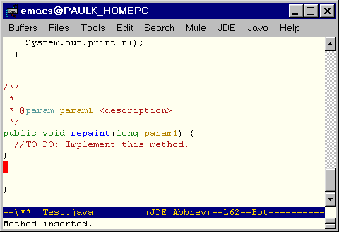

Welcome to the JDE User's Guide. This guide explains how to use the JDE to develop Java applications and applets. The guide assumes that you are familiar with Emacs and JavaSoft's Java development tools.
The Java Development Environment (JDE) is an Emacs Lisp package that interfaces Emacs to third-party Java application development tools, such as those provided by JavaSoft's Java Development Kit (JDK). The result is an integrated development environment (IDE) comparable in power to many commercial Java IDEs. Features include:
The JDE requires the following software:
The JDE distribution includes the following files:
jde.el. Defines jde-mode, a major
Emacs mode for developing Java code.jde-run.el. Runs Java
applications and appletsjde-db.el. Interfaces Emacs to
jdb, the command-line debugger that comes with the JDK.jde-gen.el. Contains code
generation templates.bsh.jar. Compiled files for the BeanShell, a
Java source code interpreter developed by Pat Neimeyer.beanshell.el. Provides an
Emacs interface to the BeanShell interpreter.jde-wiz.el. Provides "wizards"
that generate skeleton implementations of interfaces and
skeleton overrides of methods declared by superclasses.jde-complete.el. Automatic field
and method completion package.jde-parse.el.
Java parser package.java.bnf.
Java grammar used to generate the JDE's lisp-based Java parser.jde-bug.el.
JDEbug user interface package.jde-dbs.el.
JDEbug low-level command interface package.jde-dbo.el.
JDEbug output processing functions.jtags is a bash shell script that
tags Java source hierarchies.jtags.csh is a c shell script
that tags Java source heierarchies.See the Emacs JDE Home Page for instructions on downloading and installing the most recent version of the JDE.
Please send bug reports and enhancement suggestions to Paul Kinnucan.
To edit an existing Java source file, load it into an Emacs buffer by executing C-x C-f. Loading a Java source file into a buffer causes the buffer to enter into jde-mode, a variant of java-mode, which is in turn a variant of the standard Emacs cc-mode for editing source files written in C and related languages. Jde mode offers all the specialized source file editing commands of cc-mode plus functions for compiling, running, and debugging Java source files. You can invoke the commands by selecting them from the JDE menu that jde-mode displays on the Emacs menu bar or by typing the commands in the Emacs minibuffer (see the figure below).
The JDE provides complete support for generating HTML documentation for Java classes from comments inserted into the source code for those classes.
See Also
Displaying Java Documentation
To insert a skeleton javadoc comment for a class or method, position point in the first line of the method or class and select JDE->Document from the Emacs menubar or type C-c C-v j.
To customize the javadoc skeletons, select JDE->Options->Project->Javadoc from the Emacs menubar.
Note Thanks to David Ponce for developing the JDE's javadoc comment generation facility.
To generate documentation for the current project, open any source
file in the project and select Make Doc from the JDE menu or enter
M-x jde-javadoc-make.
The jde-javadoc-make runs the JDK's javadoc program to
generate the documentation. The javadoc command
must be on your system's command path.
The jde-javadoc-make command uses
jde-global-classpath
as the -classpath and jde-db-source-directories
as the -sourcepath option for generating the doc. You can specify all
other javadoc options via JDE customization variables. To specify the
options, select Project->Options->Javadoc from the JDE
menu. Use
jde-javadoc-gen-packages to specify the packages, classes, or source
files for which you want to generate javadoc. If this variable is nil,
the jde-javadoc-make generates javadoc for the Java source file in the current
buffer.
Note Thanks to Sergey A Klibanov for developing the JDE's javadoc generation facility.
With the JDE, you can enter the first few letters of a Java keyword, field, or method name and then have the JDE enter the remaining characters. When completing methods, the JDE enters the method arguments as well. The following sections describes the completion options that the JDE offers.
The JDE defines a set of abbreviations for Java keywords. When you type one of these abbreviations followed by a space in a Java source buffer, the JDE optionally expands the abbreviation into the keyword. For example, when the abbreviation mode is enabled, you need only type fa followed by a space to enter the Java keyword false. To enable or disable abbreviation mode, select JDE->Project->Options->General and toggle the boolean variable jde-enable-abbrev-mode. To change,
remove, or add an abbreviation, edit the variable jde-mode-abbreviations
in the project customization buffer.
Note The JDE's Java keyword expansion facility is based on the Emacs abbrev-mode facility. For more information, see the Emacs user manual.
Control Structure Completion
The JDE defines abbreviations for Java control structures, such as if-then-else. When you enter the abbreviation followed by a space, the JDE expands the abbreviation into a corresponding control structure template. For example,
ife
expands to the control structure template
if ( ) {
} // end of if ()
else {
} // end of if ()else
The JDE defines the following abbreviations for control structures.
| Statement | Abbreviation |
|---|---|
if-then |
if |
else |
else |
if-then-else |
ife |
while |
while |
for |
for |
for (int I=0;I<UL;I++) |
for |
main method |
main |
switch |
switch |
case |
case |
Note You must enable the JDE's Java keyword abbreviation mode to use the control flow abbreviations. See Java Keyword Completion for more information.
The JDE's Java control flow templates support two options for opening brace placement: placement on the first line of the template (Kerningham & Ritchie Style, the default) and placement on a separate line. Type M-x customize-variable jde-gen-k&r to specify the style you prefer.
You can customize the templates to suit any indentation style. To customize the templates, select Project->Options->Autocode from the JDE menu.
Some templates optionally prompt you for items to insert into the template. To enable
prompting, set the variable tempo-interactive to a
non-nil value in your .emacs file.
To disable the control flow abbreviations, set the variable jde-gen-cflow-enable off.
Thanks to Eric D. Friedman
Emacs provides dynamic completion commands attempt to find completions for the word at point in the current buffer or other buffers. For example, suppose that the current source buffer contains the class names Component and Container. Now suppose you enter Co somewhere in the buffer and type M-/. Emacs completes Co to Component. Typing M=/ again changes Component to Container. In this way, you can cycle through all the possible completions for Co in the current buffer.
Emacs provides two dynamic completion commands: dabbrev-expand, which is bound to the key sequence M-/ by default, and hippie-expand. The dabbrev-expand command searches the current buffer for completions of the word at point and, if none are found, other buffers of the same type. For example, if the current buffer is a Java source buffer, it searches other Java source buffers for completions if none are found in the active buffer. The hippie-expand provides more extensive search capabilities. See the docstrings for these functions for more information.
The JDE provides two commands for completing a Java field or method name at point in the current buffer: jde-complete-at-point (C-c C-v .) and jde-complete-at-point-menu (C-c C-v C-.).
This command finds all the fields and methods that complete the name at point. It then inserts the first potential completion in the buffer at point. Repeatedly typing C-c C-v . causes the JDE to cycle through the other potential completions. If the completion is a method name, the command completes the method name and displays the method signature in the minibuffer. For example, typing C-c C-v .
String s;
s.get
^
completes the method name at point as follows
String s;
s.getClass(
^
and displays
java.lang.Class getClass()
in the minibuffer. Repeatedly typing C-c C-v . cycles through all the other get methods for the Java String class.
This command works for all of the following cases.
Names of fields and methods of the current class must start with this or
. (period). Names of fields and methods declared by
the parent of the current class must start with super.
For example, this command completes
.
^
this.
^
super.
^
For example, this command completes
System.out.prin
^
For example, this command completes
Toolkit.getDefaultToolkit().get
^
For example, this command completes
void setColor(String color) {
color.get
^
}
The jde-complete-at-point command uses the Beanshell to run Java code that in turn uses Java's reflection (class introspection) capability to determine the fields and methods defined for the class of object at point. The command starts the Beanshell if it is not running. This can cause a noticeable delay in the execution of the command the first time it is used in a session. The response can also be slow for classes containing many methods and fields.
The completion command works only for compiled classes that reside in the classpath defined by jde-global-classpath when the Beanshell starts. Thus, if the command is unable to complete a method or field, make sure that the class that defines the field or method is compiled and exists on jde-global-classpath.
This command works exactly like jde-complete-at-point except that it displays the potential completions for a field or method in a popup menu. Selecting a completion from the menu causes the command to use it to complete the method or field at point.
The JDE provides the following code generation capabilities.
The JDE provides code generation wizards that generate class-dependent code without requiring you to supply any other information than the unqualified name of the class.
The wizards use the BeanShell to run a Java utility that searches the classpath specified by jde-global-classpath for classes that match the unqualified name. If a wizard finds more than one class of the same unqualified name on the classpath, i.e., a class that exists in more than one package, it prompts you to select one of the classes.
Note A wizard starts the Beanshell interpreter if it is not already running. Thus, you may experience a slight delay when invoking a wizard for the first time in a session.
The import wizard generates an import statement for the class name at point if an import statement does not already exist for that class. The wizard generates the import statement at the head of the source buffer.
To import the class at point, select JDE->Wizards->Import Class from the Emacs menubar or type C-c C-v C-z.
The import wizard searches the current classpath for classes that match the class name at point, which may be unqualified. If the import wizard finds more than one class of the same unqualified name on the current classpath, it prompts you to select one of the classes to import.
Note The classpath that the import wizard searches for import candidates is the classpath specified by jde-global-classpath when the BeanShell was last started.
The customization variable jde-wiz-import-excluded-packages allows you to specify a list of packages to exclude from consideration for import into the current source file. If the import wizard finds any classes on the classpath that belong to the list of prohibited packages, it removes them from the list of classes considered for import.
The method override wizard generates a skeleton method that overrides a similarly named method defined by a superclass.
To override a method of a superclass:
The point must be within the class that is overriding the method.


The JDE prompts you to enter the name of the method to be overridden in the minibuffer.

The name must be the name of a method defined by an ancestor of the class in which the Emacs point is located. The compiled class of the ancestor must be on the classpath specified by jde-global-classpath.
If the ancestors of the class in which you are overriding the method define more than one method of the same name, the wizard displays a dialog buffer that lists the methods. For example, Java's awt class hierarchy defines several variants of the method repaint. If you specify repaint as the method to override, the JDE displays the following dialog buffer:

The dialog buffer lists the signature of each variant of the method you specified. Next to each signature is a radio button. The radio button of the currently selected signature contains an asterisk. To select another signature, right-click the radio button next to the variant. To confirm your selection and dismiss the dialog, right-click the [Ok] button.
The wizard inserts a skeleton implementation of the selected method at the current point in the Java source buffer.

The wizard also inserts import statements for any classes referenced by the method that are not already imported by the containing class either explicitly or implicitly. The wizard inserts the import statements at the head of the source buffer after any existing import statements, or any package statement, or the first blank line in the buffer.
Note: The method override wizard uses the BeanShell to create the interface implementation. If the BeanShell is not currently running, the wizard starts the BeanShell. Thus, if the BeanShell is not already running, you may experience a short pause the first time you override a method.
This wizard creates a skeleton implementation of any interface defined on the classpath specified by jde-global-classpath.
To create an implementation of an interface:
The JDE prompts you to enter the name of the interface to be implemented.
The wizard inserts skeleton implementations of the methods declared by the interface at the current point in the current buffer. It inserts import statements for any classes required by the interface at the head of the current buffer (only if import statements do not already exist for the required classes). It also updates or creates an implements clause for the class.
Note: The interface wizard uses the BeanShell to create the interface implementation. If the BeanShell is not currently running, it starts the BeanShell. Thus, if the BeanShell is not already running, you may experience a short pause the first time you use the wizard.
This wizard generates methods that delegate calls to a class in the current buffer
to an attribute of the class, i.e., to an object that is a field of the current class.
For example, if the current buffer contains class A and A has an
attribute, A.b, that is an instance of class B, this wizard
generates all the public methods of class B in A and delegate
handling of those methods to b.
Acknowledgement
Thanks to Charles Hart for
contributing this wizard.
These commands create buffers containing a skeleton Java class. Each command prompts you to enter the path to a new Java source file. They then create a buffer for the new file and insert a template for a class of the same name as the newly created file. In particular, the command
You can create an empty Java class buffer by selecting Files->Open (C-x C-f) and entering the path for a new file whose root name is the same as the class you want to create and whose extension is .java.
You can specify boilerplate text (for example, a copyright notice) to be inserted at the head of class source files created by the JDE. The JDE provides two ways to specify the boilerplate text. The simplest way is to enter the lines of boilerplate text as the value of the customization variable jde-gen-buffer-boilerplate. Another way to specify the text is to set the value of the customization variable jde-gen-boilerplate-function to a function that generates the boilerplate text. (The default value of this variable is jde-gen-create-buffer-boilerplate, which returns the value of the boilerplate variable, jde-gen-buffer-boilerplate). The functional approach allows you to generate boilerplate text dynamically by evaluating the appropriate Lisp code. By saving the values of boilerplate variables in project files, you can specify different boilerplate text for each project.
The following JDE customization variables control creation of
autocoded Java source buffers:
| Variable | Group | Usage |
|---|---|---|
| jde-gen-class-buffer-template | Autocode | Template for a generic public class buffer. |
| jde-gen-console-buffer-template | Autocode | Template for a console application buffer. |
| jde-gen-jfc-app-buffer-template | Autocode | Template for a JFC (Swing) application. |
| jde-gen-buffer-templates | Autocode | Specifies templates available to create Java buffers. |
| jde-gen-buffer-boilerplate | Autocode | Specifies lines of text to be inserted at the head of class files. |
| jde-gen-boilerplate-function | Autocode | Specifies a function that returns a string of boilerplate text. The default value is jde-gen-create-buffer-boilerplate, which returns the value of jde-gen-buffer-boilerplate. |
See Customizing Autocode
Templates for information on how to customize the class
autocode templates.
The following commands insert templates at the current point in the buffer:
The following variables control generation of code at
point:
| Variable | Group | Usage |
|---|---|---|
| jde-gen-get-set-var-template | Autocode | Defines a get/set method pair template. |
| jde-gen-listener-action-template | Autocode | Defines an action listener template. |
| jde-gen-listener-window-template | Autocode | Defines a window listener template. |
| jde-gen-listener-mouse-template | Autocode | Defines a mouse listener template. |
| jde-gen-inner-class-template | Autocode | Defines a template for creating a class inside another class or inside an existing source buffer. |
| jde-gen-code-templates | Autocode | Specifies available code templates. |
See
You can customize the JDE's standard code templates, using the Emacs customization feature.
To customize an autocode template:
The JDE displays a customization buffer containing the autocode templates.
The JDE uses the template format defined by tempo.el to represent class templates. Each template consists of a list of strings, symbols, and functions, each of which represents content to be inserted successively into the buffer at the current point. The strings represent fixed content. The symbols and functions represent variable content. See the docstring for the function tempo-define-template for more information, including the meaning of special symbols such as 'n>.
A menu pops up with a list of options for saving your changes.
Select Save for Future Sessions if you want your changes to apply to all projects. If you want your changes to apply only to the current projects, select Set for Current Session. Then select JDE->Options->Save Project to save your changes in the current project's project file.
The JDE considers any command (interactive function) that inserts code into a buffer at point to be a template. The JDE uses the Emacs tempo library to create built-in templates. You can use tempo to create your own, add-on templates (see below and the doc for the tempo-define-template for more information) or create templates from scratch. In either case, once you have created a template, you can add it to the JDE's lists of available code and/or buffer templates, using the JDE's jde-gen-code-templates and/or jde-gen-buffer-templates variables, respectively. Adding a template to these lists enables you to invoke the templates from the JDE menus. When adding a template, you need to specify a unique title for the template. These titles enable you to specify the templates when invoking them, using the JDE's custom code template commands (Files->JDE New->Custom and JDE->Generate->Custom). You can use auto completion to enter a template title when invoking a custom code generation command. Note that you can specify different sets of templates for different projects, by setting and saving the template list variables in project files. See the following sections for more information:
The tempo-define-template macro enables you to define a template and a function that inserts that template at the current point in the current buffer. You specify the template as a list oftemplate elements where each element is text, a special symbol, or a Lisp expression. The function inserts each text element exactly as specified in the buffer; it replaces special symbols with some text (e.g., user input), and it replaces Lisp expressions with the text that results from evaluating them.
For example, the following Lisp code
(tempo-define-template
"foo" ;; template name
'("System.out.println(\"foo\");") ;;template definition
"f" ;; abbreviation
"Inserts a print foo message") ;; template documentation
defines a template for Java code that always prints "foo" to standard out:
System.out.println("foo");
Notice that the template definition uses the Lisp string escape character to specify the string "foo". This is necessary when you want to include quoted strings in a template definition.)
The sample Lisp form also defines an interactive template function tempo-template-foo. Now suppose you insert the sample code in your .emacs file. After Emacs starts up, whenever you enter the command M-x tempo-template-foo, Emacs inserts
System.out.println("foo");
at the current point in your Java source buffer (or any buffer, tempo doesn't care).
The preceding example is admittedly not vary useful because it always prints the same text. You can create more useful templates, using special tempo template symbols and lisp forms. This approach, for example, allows you to create a template that can print any user-defined text to standard out:
(tempo-define-template
"debug" ;; template name
'("if (debug)" n> ;; insert new line plus indent
"System.out.println("
(p "Enter debug message:") ;; Prompts for debug message
");")
"d" ;; abbreviation
"Inserts a print debug message") ;; template documentation
The template function produced by this example prompts you to enter the text to be printed when inserting the function into a buffer. In particular, it inserts
if (debug)
System.out.println(DEBUG-MESSAGE);
where DEBUG-MESSAGE is any text that you enter. For example, suppose you enter
"Selected color = " + color
at the prompt. The template function inserts
if (debug)
System.out.println("Selected color = " + color);
at the current point in the buffer.
See the documentation for tempo-define-template (type c-h f tempo-define-template) for more information on creating templates.
You can register templates that you create with the JDE. When
you register a template with the JDE, it appears among the list
of templates that you can select when you select JDE->Generate->Other....
You register a template by customizing the JDE variable jde-gen-code-templates.
The value of this variable is a list of the template functions
that the JDE command JDE->Generate->Other...
can invoke. To register a custom template, add its name to the
list. For example, the following screen shows the customization
buffer for
jde-gen-code-templates after it has been customized to
include the template defined in the previous example.

To insert a template that you have registered
The JDE displays the prompt
Enter template:
in the minibuffer.
or,
press the TAB key to display a list of templates in a completion buffer:

Select the template you want by double-clicking its name.
You can assign templates to keyboard keys to speed use of frequently used templates. For example, insert this form
(global-set-key [f9] 'jde-gen-to-string-method)
in your .emacs file to assign the F9 function key to the JDE template that generates a skeleton toString method.
The jde-compile command (JDE->Compile, C-c C-v C-c) compiles the Java source file in the current buffer, using javac, the Java compiler provided by the JDK, or another compiler that you specify (see Specifying a Compiler). The compile command displays the output of the compiler in a separate compilation buffer. If a compilation buffer does not exist, the compile command creates the buffer; otherwise, it reuses the existing compile output buffer. The compilation buffer operates in compilation-mode, a standard Emacs buffer mode. This mode greatly simplify locating compilation errors in the Java source code. For example, to find the line that cause a compilation error, simply click the error message in the compilation buffer.
The JDE uses the Emacs command start-process-shell-command
to launch a Java compile process. This command in turn uses the equivalent of
SHELL COMMAND_SWITCH javac OPTIONS BUFFER_NAME.java
to launch the compile process where SHELL is the command shell
specified by the Emacs variable shell-file-name and
COMMAND_SWITCH is the value of the Emacs
variable shell-command-switch. You must set these variables to be
compatible in your .emacs file. For example, if you set shell-file-name to
bash, you must set shell-command-switch to -c, the command
switch used by bash.
Note Compile processes are the only processes launched by JDE, using a
command shell. The JDE uses the Emacs command start-process to launch all
other processes, e.g., java, jdb, and JDEbug processes. The start-process
launches processes as subprocesses of Emacs, without doing any wild-card expansion or
environment variable substitution of command-line arguments.
The JDE allows you to specify compilation options by setting compilation variables.You must use the Emacs customization feature or, if available, JDE functions to set compilation variables. To use the customization feature, select Options->Compile from the JDE menu. (See Configuring the JDE for more information on using the customization feature). To save the compilation settings in the project file (see Using Project Files) for the current source buffer, select Options->Update Project from the JDE menu.
If you set the customization variable jde-read-compile-args to a non-nil value, the JDE compile command prompts you to enter compilation options in the minibuffer. It appends the options that you enter to the options specified via customization variables. The JDE saves the arguments that you enter in a minibuffer history list. You can recall previously entered options by pressing the up or down arrows on your keyboard.
Note: The JDE uses the values of the JDE customization variables to set the compiler's command-line option switches. The JDE assumes that the compiler you are using (specified by the customization variable jde-compiler) has the same set of command-line switches as the latest version of javac, the compiler supplied with JavaSoft's JDK. If the command-line switch for a particular option supported by the compiler your are using is not the same as that specified by the latest version of javac, you must use the variable jde-compile-option-command-line-args to select the option.
The following table lists the JDE compilation variables and
the functions used to set them.
| Name | Group | Usage |
|---|---|---|
jde-compiler |
Project | Specifies the compiler
(javac, by default) to use to compile the code in
the current source buffer. The command jde-set-compiler
sets the buffer-local value of this option. |
jde-compile-option-command-line-
args |
Compile | Specifies a string of command-line arguments to be passed to the compiler. |
jde-global-classpath |
Project | Specify class paths for compile, run, and debug commands. |
jde-read-compile-args |
Project | Specify whether to read compile options from the minibuffer. |
jde-compile-option-classpath |
Compile | Specifies the
classpath for compile command. If set, this variable
overrides jde-global-classpath. |
jde-compile-option-sourcepath |
Compile | Specifies the path of source files for classes required to compile the current class. |
jde-quote-classpath |
Project | Quote the classpath argument. |
jde-compile-option-directory |
Compile | Specifies the directory into which to place the compiled class. |
jde-compile-option-deprecation |
Compile | Warn of use or override of a deprecated member or class |
jde-compile-option-debug |
Compile | Generate information about local variables for debug tools. |
jde-compile-option-optimize |
Compile | Directs the compiler to try to generate faster code. |
jde-compile-option-depend |
Compile | Analyze dependencies. |
jde-compile-option-depend-switch |
Compile | Command line switch that causes the compiler to analyze dependencies. |
jde-compile-option-vm-args |
Compile | Specify command-line arguments for Java interpreter used to run the compiler. |
jde-compile-option-verbose-path |
Compile | Print verbose messages. |
jde-compile-option-verbose |
Compile | List directories searched to compile current class. |
jde-compile-option-nowarn |
Compile | Turn off warnings. |
jde-compile-option-encoding |
Compile | Specify the source file encoding name, such as EUCJIS\SJIS. |
jde-compile-option-target |
Compile | Generate code compatible with a specified vm version. |
jde-compile-option-bootclasspath |
Compile | Specify classpath of standard libraries for target vm. |
jde-compile-option-bootclasspath |
Compile | Specify path of directories containing extensions for target vm. |
The JDE->Build command builds
or rebuilds an application. This command has two operating modes:
java and make. In java mode, this command uses javac's built-in
make (-depend) facility to rebuild a project. In make
mode, this command uses a user-specified make utility, such as
GNU make, to rebuild a project. See Sample Makefile for an example
of a makefile for building a Java project. JDE configuration
variables control which mode is used. In particular, if the
variable jde-build-use-make is non-nil, this
command invokes the make program specified by the variable jde-make-program.
If the variable jde-make-args is a non-empty string,
this function uses its contents to invoke make; otherwise, it
prompts you to enter command-line arguments for make. If jde-build-use-make
is nil, this function invokes javac on the source file
for the class specified by jde-run-app-class, with the -depend
option. This causes javac to recompile all missing or out-of-date
files required to run the application's main class. JDE finds the
source for your application's main class by searching the
directories specified by jde-db-source-directories. Thus,
you must set this variable to use the Java build mode.
The following table summarizes the usage of the build
configuration variables.
| Name | Group | Usage |
|---|---|---|
| jde-build-use-make | Project | A non-nil values causes the JDE to use a make utility (specified by jde-make-program) to execute the JDE->Build command. A nil values causes the JDE to use javac with the -depend option to execute the JDE->Build command. |
| jde-make-program | Project | Specifies the name of the make utility used to execute the JDE->Build command. The default values is make. |
| jde-make-args | Project | Specifies a string of command-line arguments (for example, "-f mymakefile all") to be passed to the make utility used to execute the JDE->Build command. If the null string (""), the JDE prompts the user to enter the command-line arguments in the minibuffer. |
The following is a sample makefile that you can use as a model for creating makefiles to build Java projects.
JDK = d:/jdk1.2/lib/classes.zip
JMATH = d:/jmath/src
CLASSPATH = $(JMATH);$(JDK)
COMPILER = javac
VM = java
COPTIONS = -g -deprecation
ROPTIONS =
CLASSES = Test.class \
JMathError.class \
JMathException.class \
LinearSystem.class
.SUFFIXES: .java .class
all : $(CLASSES)
# Rebuild (if necessary) and run the JMath test suite.
run: $(CLASSES)
$(VM) -classpath "$(CLASSPATH)" jmath.Test
# Remove all class files from the project directory.
clean:
rm *.class
# Implicit rule for making Java class files from Java
# source files.
.java.class:
$(COMPILER) $(COPTIONS) -classpath "$(CLASSPATH)"
$?
The JDE allows you to run a Java application as an Emacs subprocess. You can run multiple applications concurrently, but only one instance of each application at a time. The JDE displays each application's standard and error output in an Emacs command interface (comint) buffer. You can interact with applications that accept command line input via the comint buffer. When interacting with an application, you can use any of comint-mode's extensive set of command-line history commands to speed interaction. To run an application, enter
M-x jde-run
or select Java->Run App on the Emacs menubar or type C-c C-v C-r.
The JDE can start an application from any directory that you specify. By default, the JDE starts an application from the default directory of the current source buffer. The default directory of the current source buffer is the directory containing the source file displayed in the buffer. You can specify another directory as the startup directory by setting the JDE customization variable jde-run-working-directory.
To set this variable,
You can do this by typing
M-x customize-variable jde-run-working-directory
or selecting Options->Project from the JDE menu to display the project customization panel and searching this panel for jde-run-working-directory.

To save the edited bindings, right click the [State] button and choose Set for current session if you want the settings to apply only to the current project or Save for future sessions if you want the settings to apply to all projects. In either case, you should save the new settings in you project file if your project has a project file. To save the new settings in your project file, switch to a source buffer and choose Options->Save Project from the JDE menu.
If you set the customization variable jde-run-read-vm-args to a non-nil value, the JDE compile command prompts you to enter virtual machine options in the minibuffer. It appends the options that you enter to the options specified via customization variables. The JDE saves the arguments that you enter in a minibuffer history list. You can recall previously entered options by pressing the up or down arrows on your keyboard.
If you set the customization variable jde-run-read-app-args to a non-nil value, the JDE compile command prompts you to enter command-line application arguments in the minibuffer. It appends the options that you enter to the arguments specified via the customization variable jde-run-option-application-args. The JDE saves the arguments that you enter in a minibuffer history list. You can recall previously entered options by pressing the up or down arrows on your keyboard.
The JDE allows you to specify run-time options by setting run variables.You can use the Emacs customization feature to set run-time variables interactively. To use the customization feature, select Project->Options->Run from the JDE menu. (See Configuring the JDE for more information on using the customization feature). To save the compilation settings in the project file (see Using Project Files) for the current source buffer, select Project->Project File->Save Project from the JDE menu.
The following table lists the JDE run-time variables and the
functions used to set them.
| Variable | Group | Usage |
|---|---|---|
| jde-run-mode-hook | Project | List of hook functions run by jde-run-mode. |
| jde-run-working-directory | Project | Startup directory for running or debugging Java applications. |
| jde-run-application-class | Project | Name of the Java class to run. The command jde-run-set-app sets the buffer-local value of this variable. |
| jde-run-java-vm | Project | Specify Java interpreter for non-Windows platforms. The command jde-run-set-vm sets the buffer-local value of this variable. |
| jde-run-java-vm-w | Project | Specify Java interpreter for Windows platforms. The command jde-run-set-vm-w sets the buffer-local value of this variable. |
| jde-global-classpath | Project | Specify class paths for compile, run, and debug commands. The command jde-set-global-classpath sets the buffer-local value of this variable. |
| jde-run-classic-mode-vm | Project | Specifies that the JDE should run the JDK's classic version of the Java virtual machine (as opposed to the HotSpot version). This option applies only to versions of the JDK that include both a classic and a HotSpot vm. |
| jde-run-read-vm-args | Project | Specifies whether to read vm arguments from the minibuffer. |
| jde-run-option-classpath | Run | Specifies the classpath for the Java interpreter. This option overrides the jde-global-classpath option. |
| jde-run-option-verbose | Run | Print messages about the running process. |
| jde-run-option-properties | Run | Specify property values. |
| jde-run-option-heap-size | Run | Specify the initial and maximum size of the interpreter heap. |
| jde-run-option-stack-size | Run | Specify size of the C and Java stacks. |
| jde-run-option-garbage- collection |
Run | Specify garbage collection options. |
| jde-run-option-java-profile | Run | Enable Java profiling. |
| jde-run-option-heap-profile | Run | Output heap profiling data. |
| jde-run-option-verify | Run | Verify classes. |
| jde-run-option-vm-args | Run | Specify command-line arguments to be passed to the Java vm. The command jde-run-set-args sets the buffer-local value of this variable. |
| jde-run-option-application-args | Run | Specify command-line arguments to pass to the application. The command jde-run-set-app-args sets the buffer-local value of this variable. |
The JDE provides specialized commands for running and debugging applets.
To run an applet:
The JDE searches for an html file in the directory containing the applet source file and displays the first file it finds, using your system's default browser. If the JDE cannot find an html page in the applet's source file directory, it signals an error by default.
The JDE->Run Applet command assumes by default that the directory containing the applet's source also contains an html page for testing that applet. If this is not true in your case, you have two options. You can either specify the path of the applet file via the JDE customization variable jde-run-applet-doc or you can use the jde-run-applet command to run your applet. If the jde-run-applet-doc variable is not a null string, JDE->Run Applet displays the document that the variable specifies instead of searching the source file directory for a document to display. The jde-run-applet command prompts you to enter in the minibuffer the path of an html file to display. If you enter nothing, the command defaults to the behavior of JDE->Run Applet.
The run commands chooses the viewer as follows. If jde-run-applet-viewer is a null string (the default) or browse-url, the JDE uses browse-url to launch the applet doc in your system's default browser. Otherwise, the menu command uses comint to launch the viewer (e.g., appletviewer) specified by jde-run-applet-viewer.
To debug an applet:
The JDE searches for an html file in the directory containing the applet source file. If the JDE cannot find an html page in the applet's source file directory, it signals an error by default. Otherwise, it runs appletviewer in debug mode on the first file that it finds.
The Emacs window splits into two panes.
The top pane shows the applet's source file with the debug cursor pointing to the first line of the applet's init file. The bottom pane displays the debugger's command line interface. You can now set breakpoints, single-step, or continue running the applet. See Debugging Applications for more information.
If you want to specify the document to be used to test the applet, customize the variable jde-run-applet-doc or execute M-x jde-db-applet. This command prompts you to enter the test document's name.
The JDE allows you to specify run-time options for applets by setting JDE configuration variables.You must use the Emacs customization feature to set applet run-time variables . To use the customization feature, select Options->Run from the JDE menu. (See Configuring the JDE for more information on using the customization feature). In some cases, the JDE also provides functions for setting the buffer-local values of the compilation variables. To save the compilation settings in the project file (see Using Project Files) for the current source buffer, select Options->Update Project from the JDE menu.
The following table lists the JDE applet run-time variables
and the functions used to set them.
| Variable | Group | Usage |
|---|---|---|
| jde-run-applet-viewer | Project | Specify name of viewer to use to display page containing the applet. The command jde-run-set-applet-viewer sets the buffer-local value of this variable. |
| jde-run-applet-doc | Project | Specify name of document containing applet to be viewed. The command jde-run-set-applet-doc sets the buffer-local value of this variable. |
Debugging Applications
The JDE provides two options for debugging Java applications.
jdb, the command-line
debugger that comes with the JDK. See Debugging with jdb for more
information.JDEbug provides more debugging features but requires a JDK 1.2
or higher vm. You must use jdb to debug applications
running on earlier vms.
The JDE allows you to define a classpath that applies to
compiling, running, and debugging Java code. You define this
classpath by customizing the jde-global-classpath
option. To display a customization buffer for this variable,
select JDE->Project->Options->General
or enter M-x customize-variable jde-global-classpath.
Note Do not make the mistake of setting
jde-global-classpath the way you set the -classpath
switch of the Java vm. The value of jde-global-classpath
is a list of strings, each of which specifies a path. When starting a program
that requires the -classpath switch, such as javac, the JDE converts
this list to a string consisting of paths separated by a semicolon or colon.
You can also define separate classpaths for compile, run, and
debug operations by customizing the variables jde-compile-option-classpath,
or jde-run-option-classpath, jde-debug-option-classpath,
respectively. If you set any of these variables, the variable
overrides the value defined by jde-global-classpath
for the operation to which the variable applies.
A project file is a Lisp file that the JDE loads and evaluates whenever you open a Java source file belonging to a specific project. Project files allow you to save and restore project-specific JDE configurations. For example, you can use a project file to set the value of the jde-global-classpath variable to a project-specific classpath automatically whenever you load a file belonging to that project.
To simplify the task of finding project files, the JDE makes two assumptions. First, it assumes that all Java source files relating to a particular project live in a single directory tree. Second, it assumes that all project files have the same file name. The name assumed by default is prj.el. You can use the JDE configuration variable jde-project-file-name to specify another name. When you open a Java source file, the JDE looks for a project file in the directory containing the source file. If it cannot find a project file in the source file directory, it searches up the directory tree until it finds a project file or reaches the root of the directory tree. If the JDE finds a project file, it loads and evaluates the contents of the file as the last step in creating the buffer containing the Java source file.
A project file can contain any Lisp code that can be evaluated correctly as the last step in creating a Java source buffer. For example, a project file can contain code that sets the value of JDE configuration variables. In general, a project file can contain any code that could be implemented as a jde-mode hook function. In fact, you can think of a project file as a project-specific jde-mode hook function.
The easiest way to create a project file is to use the jde-save-project command (JDE->Options->Save Project). This command saves the current values of all the JDE configuration variables in the project file for the selected Java buffer. (To be precise, the command inserts Lisp code in the project file that restores the current settings of the configuration variables; if such code already exists in the file, it replaces it with updated code.) If the project file does not exist, the command creates the project file. Thus, to create a project file that sets JDE configuration variables to project-specific values:
Once you have created the project file, you can insert additional configuration code into the file if desired. Note that the jde-save-project command edits rather than replaces existing project files. Thus, you can use the command to update configuration variable settings without disturbing any other configuration code that you have inserted manually into the project file.
The JDE provides commands for displaying the JDK API documentation and context-sensitive help for classes.
The jde-browse-jdk-doc command (JDE->Browse JDK Doc, C-c C-v C-n) opens the JDK documentation in a browser. By default, this command displays the JDK documentation page at JavaSoft's web site. To display a different copy, set the variable jde-jdk-doc-url to the url of the index page of the copy you want to be displayed.
The JDK provides context-sensitive help for Java classes. To
use this facility, you must first customize the variable
jde-help-docsets to specify the
location of class documentation on your system. The JDE
class help facility supports javadoc documentation by default
but it works with other types of documentation as well.
Once you have specified the location of class documentation
on your system, you can get help for the class at point in the
current buffer by select Help->Symbol at Point
from the JDE menu.
Browsing Source Code
The JDE provides the following facilities for browsing Java source code:
The jde-show-class-source command (C-c C-v C-y) finds and opens the Java source file for the class whose qualified or unqualified name appears at point. If more than one class with the same name exists on jde-global-classpath, this command prompts you to select one of the classes. The following conditions must be true for this command to work. First, a class file for this class must exist on the cclasspath specified by jde-global-classpath. Secondly, the source for the class must exist on one of the paths specified by jde-db-source-directories. This command uses the Beanshell to determine the fully qualified name of the class to be found. It starts the Beanshell if necessary. Thus, the command may respond somewhat slowly the first time you it in a session.
Classes Index Menu
The Classes index menu appears by default in the Emacs menubar whenever a Java source buffer is active. The menu consists of a cascading list of all classes, methods, fields, and imports defined in the current buffer plus the package to which the current buffer belongs. Selecting any item scrolls the buffer to the statement that defines the item.

The top-level menu contains an entry for each each class defined by the active buffer followed by entries for the imports and package of the current buffer. Selecting the entry for a class displays a submenu listing the inner classes, methods, and fields defined by the class. Selecting the entry for an inner class displays another submenu for that class, and so on. Selecting the imports entry on the top-level menu displays a submenu listing all the classes and packages imported by the active buffer.
The index menu includes the following special index entries:
Selecting this item causes the JDE to rebuild the index menu. You should rebuild the menu whenever you edit the buffer.
Selecting this item takes you to the start of the definition of
the class on whose submenu it appears. Turn the variable
jde-imenu-include-classdef off to suppress inclusion
of these items in the menu.
By default the Classes menu lists methods and fields in the order in which the active buffer defines them. Use the variable jde-imenu-sort to customize the menu to list methods and fields alphabetically in either ascending or descending order.
By default the Classes menu displays the signatures of methods and the types of fields displayed in the active buffer. The method signatures enable you to distinguish overloaded method names. The menu can also display the names of methods and fields without signatures and types. Use the variable jde-imenu-include-signature to turn signature and type display off or on.
Set the variable jde-imenu-enable off to disable the Classes menu. When disabled, the menu does not appear in the Emacs menubar.
To display the speedbar, select Speedbar from the JDE menu. The speedbar opens in a separate frame.

The speedbar displays a list of the files and subdirectories in the directory containing the file displayed in the current buffer. The speedbar highlights the file displayed in the current buffer.
Click on the expand (+) button in front of any file. The node for the file expands

This item expands to show the package to which the file belongs.

Clicking on the package scrolls the buffer to the corresponding package declaration.
This item expands to show the classes in the selected file.

Each class expands to show the constructors, methods, fields, and inner classes defined by the class and the class's parent, if any. Inner classes also expand and their inner classes, and so on. The constructors and methods expand to show arguments and argument types and return types. Fields expand to show their type.
Clicking on any class, inner class, method, constructor, or field scrolls the buffer to show that item.

Click on class or package to scroll the buffer to the corresponding import statement.
If you make changes to a source buffer, you must update the speedbar view to reflect the changes. To update the speedbar view of a buffer:
This is necessary only if the speedbar view is expanded. To collapse the speedbar view, click the collapse button (-) next to the buffer's file name in the speedbar view.
To use the etags facility, you must first construct a TAGS file that indexes every symbol in your source code. The JDE package contains two shell scripts that you can use to tag your source code, one for csh shells and the other for bash. The bash version is called jtags; the csh version, jtags.csh.
To tag your source code, first copy the appropriate shell script to a directory in your Emacs path. Then start a shell (M-x shell). Change to the top-level directory containing your source code and then enter jtags. The jtags script tags every .java file in the current directory and in all descendants of the current directory, storing the result in a file called TAGS in the top-level directory.
To find the definition of a symbol, put your cursor anywhere
in the symbol and enter M .. Emacs responds by locating
and opening (if necessary) the file containing the definition and
positioning the point at the definition. (The first time you type
M ., Emacs prompts you to load the TAGS file.)
Customizing the JDE
This section describes various ways you can customize the JDE.
JDE customization variables allow you to specify compile, run, debug, and other JDE options.
Note The traditional way of customizing Emacs is
to use setq forms to set the values of customization
variables in the Emacs initialization (.emacs)
file. This method does not work for JDE customization
variables. To set a JDE customization variable, you
must use
the customization buffer for a variable (see the
Emacs online manual for information on the
customization feature).
This is because the JDE context switching code resets all JDE customization
variables to their default or customized (via a custom buffer) values whenever
you open a Java source file or switch projects.
The following section explains
how to use the Emacs customization feature to set the value of a
JDE customization variable.
To set a JDE customization variable:
Refer to the section of this guide that documents the feature
you want to customize for the name of the corresponding variable.
Or type C-h v followed by the JDE group prefix
(jde-) or subgroup prefix (e.g.,
jde-compile-option-, see
JDE Customization Groups). Emacs displays all
variables belonging to the JDE group or subgroup. You
can then browse this list, using Emacs search, completion,
and documentation display command, to find the applicable
variable.
If you know the name of the variable, the easiest way to display a
customization buffer for the variable is to select
Help->Customize->Specific Option... from the Emacs
menubar or type M-x customize-variable. If you know the
group to which the variable belongs (.e.g., compile options), you
can display the customization buffer for the group. This is useful when
you want to customize several related variables. See
JDE Customization Groups for
more information.
.emacs or .prj file.
If you want the setting to apply to all projects that do not have a project file
(see Using Project Files), you should save the variable in your
.emacs file. To save the variable in your .emacs file, select
Save for Future Sessions from the State menu for the
variable in the customization buffer.
If you want the setting to apply only to a particular project, you should save
the setting in the .prj file for that project. To do this, open a source
file from that project, select Set for Current Session from the
State menu for the variable, select the source buffer, and select
JDE->Project->Project Files->Save (C-c C-v C-p) from the
Emacs menubar.
Note If a project file does exist for the project, the JDE will prompt you to enter a name for the project. It then creates a project file for the project with the name that you enter.
The JDE defines a top-level customization group, the JDE Group, for JDE customization variables. The JDE Group itself contains the following subgroups:
Specifies compile options corresponding to the command-line
arguments (e.g., -d) accepted by the JDK compiler, javac. When
you execute the JDE compile command, the JDE uses the settings of
this group to construct a list of command-line arguments that it
passes to the Java compiler that the JDE uses to compile Java
source programs. The compiler is itself an option that you can
specify (see the Project Option Group). You can specify command-line
arguments directly by setting the value of the jde-compile-option-command-line-args
variable. You can display the customization buffer for the
Compile Option Group by selecting Project->Options->Compile from
the JDE menu.
Specifies run-time options corresponding to the command-line arguments (for example, -classpath) accepted by the JDK virtual machine, java. When you execute the JDE Run command, the JDE uses the settings of this group to construct a list of command-line arguments that it passes to the Java interpreter used by the JDE to run applications. This group also contains options for specifying non-java command-line arguments (in case you want to use a VM that accepts a different set of arguments than java does) and for specifying arguments to be passed to the application (as opposed to the virtual machine interpreting the application.) You can display the customization buffer for the Run Option Group by selecting Project->Options->Run from the JDE menu.
Specifies run-time options corresponding to the command-line arguments (for example, -classpath) accepted by the JDK debugger, jdb. jdb accepts the same command-line arguments as java. However, the JDE maintains two parallel sets of configuration variables for these programs in case you want to use a different set of options for running a program in debug mode then you use for running it normally. When you execute the JDE Debug command, the JDE uses the settings of this group to construct a list of command-line arguments that it passes to the Java debugger used by the JDE to run applications in debug mode. You can display the customization buffer for the Debug Option Group by selecting Project->Options->Debug from the JDE menu.
Specifies templates used to generate code automatically.
Specify all other JDE options. You can display the customization buffer for the General Option Group by selecting Project->Options->General from the JDE menu.
The JDE defines a major mode, named jde-mode, for editing Java source files. This mode derives from the standard Emacs Java source editing mode java-mode. In particular, it inherits all the functions and customization variables defined by java-mode and adds its own customization variables. When you load a Java source file, Emacs runs a JDE mode initialization function called jde-mode. The jde-mode function in turn calls the Java mode intialization function, java-mode. The last thing that jde-mode does before returning is to call a JDE mode function, if it exists. You can customize the JDE by defining a JDE mode hook function in your .emacs file. The following is an example of how to do this:
(defun my-jde-mode-hook ()
(message "my-jde-mode-hook function executed"))
(add-hook 'jde-mode-hook 'my-jde-mode-hook)
The preceding example defines a JDE mode hook function named my-jde-mode-hook and adds it to the list of JDE mode hook functions, using the Emacs Lisp function add-hook. Now, whenever you open a Java source file, jde-mode invokes the function my-jde-mode-hook. Of course, the hook function defined in this example is trivial. A real-world example might do something more useful, such as setting a custom indentation style.
A key binding establishes an equivalence between a keystroke or a sequence of keystrokes and an interactive Lisp function. The keystroke or keystroke combination causes Emacs to execute the function to which the keystroke (combination) is bound. For example, the JDE by default binds the keystroke C-c C-v C-c to the function jde-compile. You can use the JDE customization facility to change the standard JDE bindings or create bindings for functions that do not have default bindings.
To customize key bindings:
or by selecting JDE->Options->Project and searching the resulting JDE project customization buffer for jde-key-bindings.
The key bindings panel looks like this: